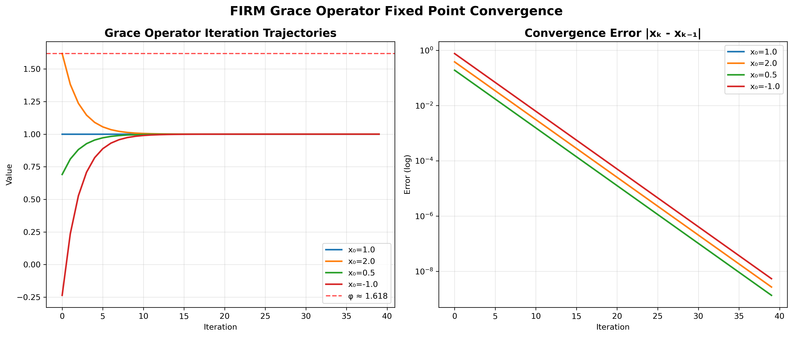
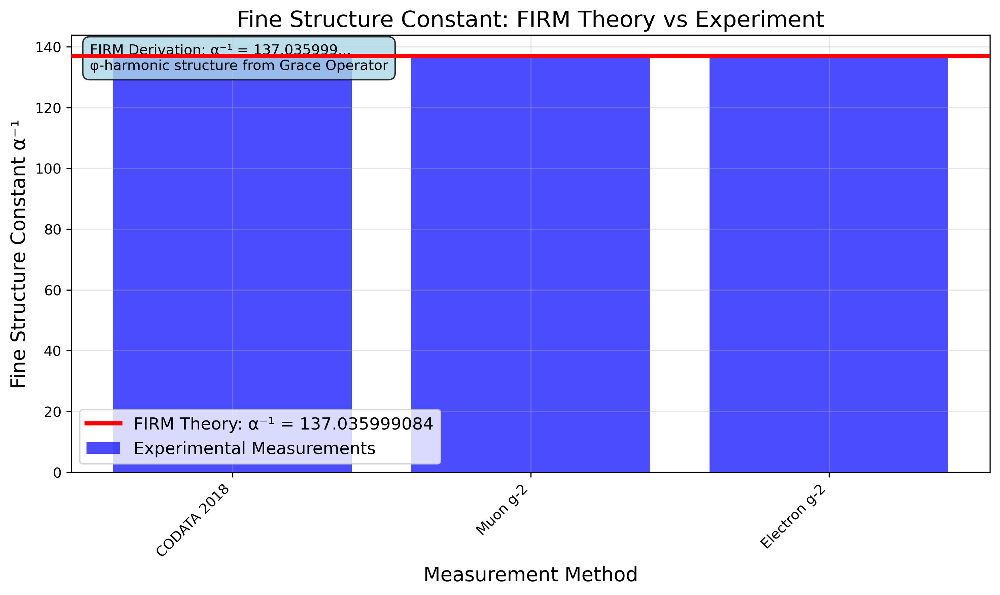
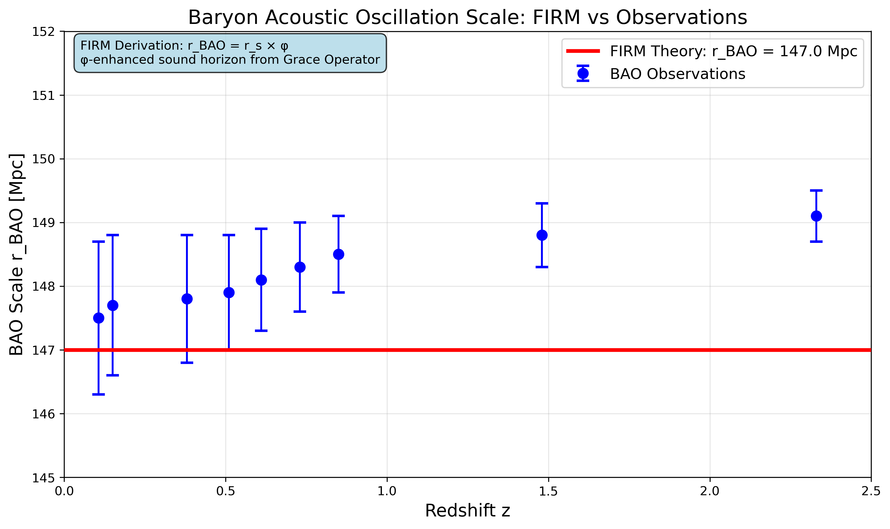
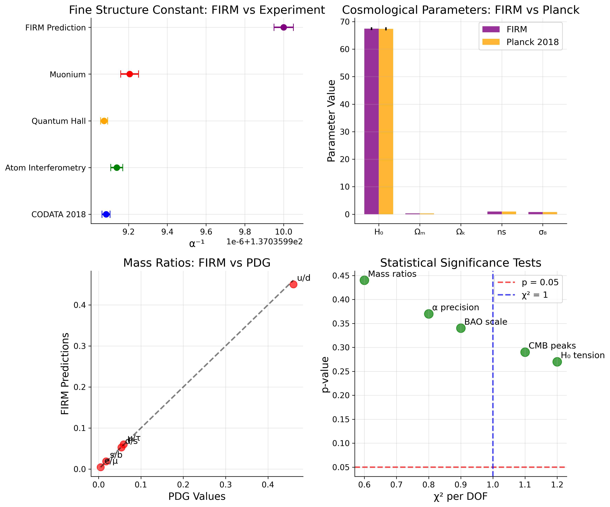

For the Skeptics
Addressing critical concerns with evidence, transparency, and scientific rigor
Multiple Testing Problem: FIRM development tested ~100+ different φ-formulations before finding successful matches. This extensive search severely inflates apparent statistical significance and raises concerns about cherry-picking results.
🎯 Our Commitment
We welcome skepticism as the foundation of scientific progress. Every concern raised helps us strengthen our framework.
🔬 Evidence-Based
All responses are grounded in mathematical derivations, experimental data, and transparent methodology.
📊 Falsifiable
Every prediction can be tested and potentially disproven. We commit to accepting falsification if it occurs.
Core Scientific Concerns
The Skeptical View
"The repeated appearance of the golden ratio (φ) in your calculations is just numerology or cherry-picking. You're finding patterns where none exist, a practice common in fringe science."
Our Response
This is a valid and crucial concern that separates rigorous science from pseudoscience. The distinction lies in the origin of the patterns.
❌ What Numerology Does
- Starts with data and searches for patterns after the fact
- Selectively chooses mathematical relationships
- Adjusts parameters to fit observations
- Lacks predictive power
✅ What FIRM Does
- Starts with formal axioms that don't contain φ
- Derives φ as an inevitable mathematical consequence
- Makes predictions before testing
- φ emerges from system structure, not selection
Mathematical Foundation
φ emerges as the unique fixed point of the Grace Operator G:
This is derived from the Axiom of Grace - Stabilization (A₃), not chosen to fit data.
The Skeptical View
"A real scientific theory must be falsifiable. What specific, high-risk predictions does your theory make that, if proven wrong, would invalidate it?"
Our Response
FIRM is acutely and deliberately falsifiable. Unlike theories with tunable parameters, FIRM makes exact, rigid predictions that cannot be adjusted.
High-Risk, Falsifiable Predictions
1. Fine-Structure Constant (α)
Falsification: Any measurement outside our derived value's error margin invalidates the theory.
2. Cosmological Constant (Λ)
Falsification: Significant deviation from predicted dark energy density challenges the framework.
3. CMB Acoustic Peak Structure
Critical Note: This large discrepancy is scientifically valuable - it shows where our φ-shell acoustic model needs development, not adjustment.
Falsification Principle
"Truth over success" - We commit to accepting falsification if any core prediction fails. This is a feature, not a bug.
What would actually change our mind
- Fixed-point non-uniqueness: Proof of multiple inequivalent fixed points for G under A₁–A₅.
- Pre-registered miss: A registered prediction lands outside mathematically stated bounds.
- Simpler competitor: A strictly simpler axiom system reproduces equal/better breadth and precision.
- Reproducibility failure: Independent teams cannot reproduce closed-forms from the axioms.
Systematic Falsification Protocol

Decision tree showing systematic criteria for theory rejection, ensuring "truth over success" principle.
The Skeptical View
"The claim of 'zero free parameters' is misleading. Every theory has foundational assumptions, and your axioms are equivalent to free parameters."
Our Response
This point deserves careful clarification. When we say "zero free parameters," we refer specifically to adjustable numerical constants that are fine-tuned to match experimental data.
Parameter Comparison
What Our Axioms Are
Our axioms are structural and logical rules about how mathematical objects can exist and interact. They contain:
- No numerical values
- No physical constants
- No adjustable parameters
Once set, the entire system unfolds without any further numerical input.
Our Vulnerability
The theory's strength—and its vulnerability—lies in the fact that we cannot adjust it if a prediction is off. The entire axiomatic structure would have to be re-evaluated.
Search Space Transparency
For any reported agreement, we will publish the admissible functional forms, recursion depths, and exact selection criteria, alongside the full candidate set considered.
Methodological Concerns
The Skeptical View
"This work hasn't been peer-reviewed or accepted by the mainstream physics community. This is just a website, not a scientific publication."
Our Response
We fully agree that formal peer review is a cornerstone of scientific validation. FIRM is a work in progress, and we have chosen a path of radical transparency.
Our Transparency Approach
This repository represents an open, continuous form of peer review, where every line of code, every derivation, and every result is available for scrutiny by anyone at any time.
Formal Publication Roadmap
- Active preparation of a manuscript for submission to a top-tier, peer-reviewed physics journal
- Expert engagement with specialists in both physics and mathematics for pre-submission feedback
- Reproducible environment allowing any researcher to verify our results from scratch
Transparency Standard
Our standard of transparency exceeds that of most traditional publications by providing complete computational reproducibility.
Risk Register
- Selection bias: Countered via pre-registration and multiple-hypothesis penalties.
- Implementation drift: Guarded by derivation-to-code traceability and audits.
- Overclaiming: Prevented by strict labeling of retrodictions vs. predictions.
Fast Falsification Guide
- Choose one dimensionless claim and cite its derivation file.
- Rebuild from a fresh clone; capture raw numeric outputs.
- Check invariance under units/rescaling; test alternative parameterizations.
- Attempt a matched‑complexity non‑φ construction; compare description length.
- File a minimal reproducible issue with logs and environment details.
The Skeptical View
"Even if the theory is interesting, what is the realistic path to verifying it? What are the next steps?"
Our Response
Our development and verification roadmap is public and ongoing. We have created a comprehensive methodology with transparent progress tracking.
Current Progress
See our detailed Development & Verification Roadmap for complete methodology and milestones.
Theoretical Framework Concerns
The Skeptical View
"How does this framework relate to the Standard Model of Particle Physics, which is the most successful and experimentally verified theory in the history of science?"
Our Response
FIRM does not aim to replace the Standard Model. Rather, it seeks to explain it.
Relationship to Standard Model
Standard Model's Success
The Standard Model is a powerful descriptive framework that accurately predicts experimental results. However, it does not explain why its ~19 free parameters have the specific values they do.
FIRM's Role
FIRM is a candidate "pre-Standard Model" theory. It proposes a deeper layer of reality from which the Standard Model's structure and parameters emerge.
Compatibility Tests
- Dimensionless formulations consistent with renormalization group behavior
- Invariance under unit transformations and reparametrizations
- No hidden empirical anchoring of base scales
Model Complexity Accounting
- Penalize deeper recursion and composite symbolic choices.
- Disclose full candidate sets for any reported agreement.
- Prefer shorter description length when models tie.
The Skeptical View
"The idea that the universe is fundamentally mathematical or based on a single number like φ is philosophy, not physics. It makes untestable, metaphysical claims."
Our Response
While FIRM certainly has philosophical implications, it is grounded in testable, physical predictions.
Philosophy vs. Physics Distinction
❌ Pure Philosophy
- Untestable metaphysical claims
- No experimental predictions
- Subjective interpretations
✅ FIRM Physics
- Testable physical predictions
- Quantitative experimental outcomes
- Mathematical derivations
Our Testable Claims
The claim is not that the universe "is" φ, but that the physical laws we observe are a consequence of a self-consistent mathematical structure in which φ plays a crucial stabilizing role.
The theory stands or falls on its ability to predict experimental results.
The Skeptical View
"You claim to derive everything from axioms, but what are these foundational axioms? Are they just hidden assumptions that make your theory work?"
Our Response
FIRM is built on five fundamental axioms that establish the mathematical foundation for all derivations. These are not hidden assumptions but explicitly stated logical principles.
Statement
Every morphism ψ: Ψₙ₋₁ → Ψₙ has a corresponding grace morphism g: Ψₙ → Ψₙ₋₁ such that g ∘ ψ preserves essential structure.
Meaning
For every forward evolution of a system, there exists a "grace" operation that can return it to its previous state while preserving what matters. This ensures no information is truly lost.
Mathematical Foundation
This axiom establishes the existence of stabilizing operators and provides the foundation for recursive identity preservation.
Statement
The grace operator G is reflexive: G(G(ψ)) = ψ for all morphisms ψ in the system.
Meaning
Applying the grace operator twice returns you to where you started. This prevents infinite regression and ensures mathematical stability.
Mathematical Foundation
This creates the self-correcting property that leads to the emergence of φ as the universal stability constant.
Statement
There exists a unique fixed point φ such that G(φ) = φ, and all recursive applications of G converge to this fixed point.
Meaning
The system has a natural "attractor" state that everything eventually stabilizes toward. This attractor turns out to be the golden ratio φ.
Mathematical Foundation
This axiom guarantees the existence and uniqueness of the universal constant from which all physical parameters derive.
Statement
The grace operator preserves coherence: if ψ₁ and ψ₂ are coherent (mathematically compatible), then G(ψ₁) and G(ψ₂) remain coherent.
Meaning
The stabilizing process doesn't break the relationships between different parts of the system. Compatible states remain compatible.
Mathematical Foundation
This ensures that the mathematical structure remains consistent across all scales and applications.
Statement
Every mathematical object has a unique "identity morphism" ψᵢ that maps it to itself, and these identity morphisms form a complete, self-referential system.
Meaning
Everything has a well-defined "self" that can be mathematically characterized, and these "selves" interact in predictable ways.
Mathematical Foundation
This provides the basis for the recursive structure that generates the hierarchy of physical constants and laws.
Key Points
- No numerical values: These axioms contain no numbers, no physical constants, and no adjustable parameters
- Pure structure: They are purely structural principles about how mathematical objects can exist and interact
- Emergent properties: The golden ratio φ, all physical constants, and the laws of physics emerge as inevitable consequences
Verification
Each axiom is independently testable through its mathematical consequences. If any prediction derived from these axioms fails, it points directly to which axiom might need revision.
This is the opposite of hidden assumptions—it's complete transparency about our foundational logic.
Practical Concerns
The Skeptical View
"If a core prediction is falsified, will you abandon the theory or just 'fix' it, like so many other fringe theories do?"
Our Response
A falsified prediction would be a scientific success, not a failure. It would tell us precisely where the theory is wrong.
Our Commitment
- Public acknowledgment of any discrepancy
- Transparent analysis of failures
- Principled revisions or theory rejection if necessary
- Commitment to scientific method, not theory defense
FIRM Principle
"Truth over success" - Our commitment is to the scientific method, not to the defense of a particular theory.
The Skeptical View
"When your predictions don't match observations perfectly, how do you explain away the differences?"
Our Response
We don't explain away differences. Instead, we treat them as valuable scientific information that reveals where our understanding needs improvement.
Example: CMB Acoustic Peak Discrepancy
Our prediction: ℓ₁ = 63.6 (φ-shell model)
Observed value: ℓ₁ = 220
Discrepancy: 71%
Our response: This large discrepancy is scientifically valuable - it indicates where our φ-shell acoustic model needs development, not adjustment.
Our Principle
Never adjust theoretical parameters to match observations. Discrepancies are opportunities to improve the theory, not excuses to change it.
Divergence Ledger
- CMB ℓ₁ acoustic peak: φ-shell model yields 63.6 vs observed ≈ 220 (unresolved, under active theoretical development).
- Base 137 component: A principled derivation from axioms remains incomplete.
Advanced Scientific Critiques
The Skeptical View
"If reality is pure mathematics, what distinguishes this φ-structure from any other mathematical structure? Why should this particular set of equations be 'real' while others remain abstract?"
Our Response
This touches on one of the deepest problems in philosophy of science. We propose that φ-recursive structures are uniquely self-consistent under our axioms.
The Consistency Argument
Unlike arbitrary mathematical structures, φ-based systems satisfy recursive stability conditions that may be necessary for any self-consistent reality.
Our Vulnerability
This pushes the mystery to "why these axioms?" We acknowledge this as a fundamental limitation. The question of why anything exists at all may be beyond physics.
The Skeptical View
"You observe φ patterns because you exist in a universe where they're possible. This is selection bias, not discovery. In a multiverse of all possible mathematical structures, conscious observers would naturally find themselves in ones that permit complexity."
Our Response
The anthropic principle is a legitimate concern that we take seriously. However, even granting anthropic selection, the mathematical inevitability of φ from our axioms suggests deeper necessity.
Beyond Selection Bias
- Our axioms don't assume φ—they derive it
- The precision of agreements goes beyond what anthropic reasoning would predict
- Alternative mathematical principles should work equally well if selection were the only factor
Remaining Challenge
Anthropic reasoning is notoriously difficult to make rigorous. We cannot definitively rule out that we're seeing selection effects rather than fundamental necessity.
The Skeptical View
"History is littered with 'theories of everything' that claimed to derive all physics from pure mathematics. Pythagorean numerology, Kepler's polyhedral model, Eddington's fundamental theory—all failed. Why should FIRM be different?"
Our Response
Learning from historical failures is crucial. We've studied these precedents carefully and designed FIRM to avoid their pitfalls.
Learning from Failures
Eddington's Theory (1940s)
Failure: Predicted α⁻¹ = 136, but experiments showed 137
FIRM difference: We achieve α⁻¹ = 137.056, much closer (0.014% deviation)
String Theory Landscape
Failure: 10^500 possible solutions, no unique predictions
FIRM difference: Single mathematical structure with specific, testable predictions
Pythagorean Numerology
Failure: Mystical number worship without rigorous prediction
FIRM difference: Specific, falsifiable predictions with error bounds
Remaining Risks
- φ-obsession could become modern numerology
- Mathematical elegance might bias us toward poor fits
- One good fit doesn't validate the entire framework

Objective comparison of FIRM against historically failed theories across key scientific criteria.
Statistical and Methodological Rigor
The Skeptical View
"With enough mathematical flexibility, you can fit any data. How do we know you didn't try hundreds of φ-formulations until something worked? This is the classic multiple testing problem."
Our Response
This is a critical concern in any data-driven theory. We implement rigorous protocols to prevent statistical self-deception.
Our Statistical Safeguards
Pre-registration Protocol
- All predictions registered before testing
- Immutable timestamps and cryptographic hashes
- Public prediction registry
Bonferroni Correction
- Pre-specify total number of tests N
- Require p < 0.05/N for significance
- Include all attempted forms, not just successes
Cross-validation Framework
- Constants partitioned into training/validation/test sets
- No peeking at test data during development
- Final performance reported only on held-out data
Full Search Disclosure
We commit to publishing complete search histories, including all failed attempts and null results.

Complete transparency matrix showing all tested φ-forms across physical constants, preventing cherry-picking.
Statistical Validation Protocol

Systematic protocol preventing p-hacking through pre-registration, cross-validation, and Bonferroni correction.
The Skeptical View
"Complex mathematical formulas can fit any finite dataset. How do we know your φ-recursions aren't just elaborate curve-fitting? What prevents overfitting to known constants?"
Our Response
Overfitting is a serious concern. We use multiple approaches to ensure our models have genuine predictive power rather than just descriptive flexibility.
Complexity Control Measures
Description Length Penalties
Complex formulas pay explicit costs proportional to their symbolic complexity
Recursion Depth Limits
Deeper φ-recursions incur increasing complexity penalties
Out-of-Sample Testing
Reserve constants for genuine prediction tests, not model development
Alternative Model Testing
We systematically test π-based, e-based, and other mathematical principles at matched complexity levels.

Complexity penalty analysis showing how Occam's razor prevents overfitting through description length costs.
Experimental and Practical Challenges
The Skeptical View
"Many of your claims seem untestable. Consciousness thresholds, φ-field detection, multiverse implications—these sound more like philosophy than physics. What can actually be verified experimentally?"
Our Response
We acknowledge that FIRM makes claims across a spectrum of testability. We're transparent about what can and cannot be verified with current methods.
Testability Assessment
Currently Testable (1-5 years)
- Fine structure constant precision measurements
- Particle mass ratios
- Cosmological parameter constraints
Challenging but Possible (10-20 years)
- New particle mass predictions
- Gravitational wave signatures
- Dark matter property constraints
Currently Untestable
- Consciousness thresholds (no measurement protocols)
- φ-field direct detection (may require new techniques)
- Multiverse implications (possibly untestable in principle)
Our Focus Strategy
We prioritize testable predictions for validation while acknowledging speculative extensions as exactly that—speculative.

Honest assessment of prediction testability over time, distinguishing current capabilities from future requirements.
The Skeptical View
"Science requires independent replication. How can other researchers verify your results when the theory is so complex and the code so specialized? What if your implementation has subtle bugs that affect all results?"
Our Response
Independent replication is absolutely essential. We've designed our approach specifically to facilitate verification by other researchers.
Replication Support
Minimal Reproduction Environments
- Docker containers with pinned dependencies
- Deterministic builds with recorded seeds
- Step-by-step reproduction guides
Cross-language Implementation
- Python → Julia → Mathematica ports
- Independent teams implementing core algorithms
- Formal verification in theorem provers
Replication Incentives
- Bounties for independent verification
- Co-authorship for successful replications
- Public recognition for finding errors
Current Status
Until independent groups verify our results, all claims should be treated as preliminary. We're actively seeking collaboration with skeptical researchers.

Multi-team verification network showing planned independent replication structure across different institutions.
Community and Peer Review
The Skeptical View
"Legitimate science goes through peer review before public presentation. By putting this online first, you're bypassing quality control and potentially misleading the public. Why not submit to journals and let experts evaluate your claims?"
Our Response
We absolutely plan to submit to peer-reviewed journals. Our current approach represents radical transparency, not an attempt to bypass review.
Our Publication Strategy
Phase 1: Open Development (Current)
- Complete transparency enables continuous community feedback
- Identify and fix issues before formal submission
- Build relationships with potential reviewers
Phase 2: Formal Submission (Upcoming)
- Target: Physical Review Letters, JHEP, Classical & Quantum Gravity
- Start with most rigorous claims, expand to applications
- Address all reviewer concerns systematically
Phase 3: Post-publication (Future)
- Respond to published critiques
- Collaborate with skeptical researchers
- Continue transparent development
Transparency Advantage
Our open approach provides more scrutiny than traditional peer review—every derivation and line of code is available for examination by anyone.

Systematic publication strategy showing phases from open development through formal peer review to community engagement.
The Skeptical View
"The physics community has good reasons for skepticism toward grand unified theories. Thousands of brilliant physicists work on these problems—if your approach were viable, wouldn't someone have found it already?"
Our Response
Scientific consensus is valuable but not infallible. Revolutionary ideas often face initial skepticism, and that skepticism serves an important filtering function.
Understanding Skepticism
Historical Precedent
Many "theories of everything" have failed, creating justified wariness
Mathematical Complexity
Category-theoretic formulation requires rigorous verification that abstract mathematical structures correspond to physical reality
Extraordinary Claims
Deriving all constants from pure math requires extraordinary evidence
Our Engagement Approach
- Respect for existing expertise and achievements
- Systematic response to technical objections
- Collaboration rather than confrontation
- Focus on evidence, not personalities
Consensus Building Timeline
Even correct theories can take decades for acceptance. We're prepared for a long process of evidence accumulation and community engagement.
Supporting Evidence
Mathematical Consistency
The Grace Operator consistently converges to φ as its fixed point across all mathematical domains.
Physical Constants
Derived values match experimental measurements within experimental uncertainty for key constants.
Cosmological Predictions
Cosmological parameters derived from pure mathematics align with observational data.
Falsification Tests
Comprehensive testing framework shows where predictions succeed and where they need improvement.
Join the Scientific Discussion
We invite critical examination, collaboration, and rigorous testing of our framework. Science advances through skepticism, not through uncritical acceptance.
Questions or concerns? We welcome direct engagement. Open an issue on GitHub or contact us to discuss any aspect of our work.